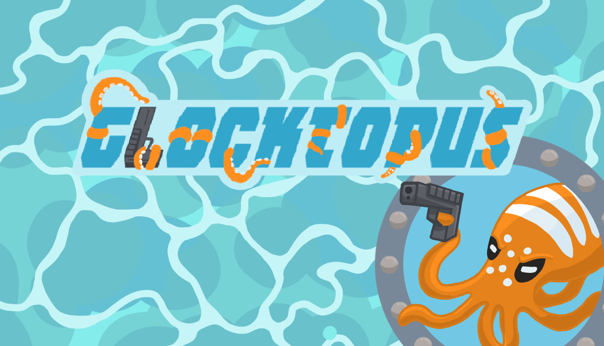
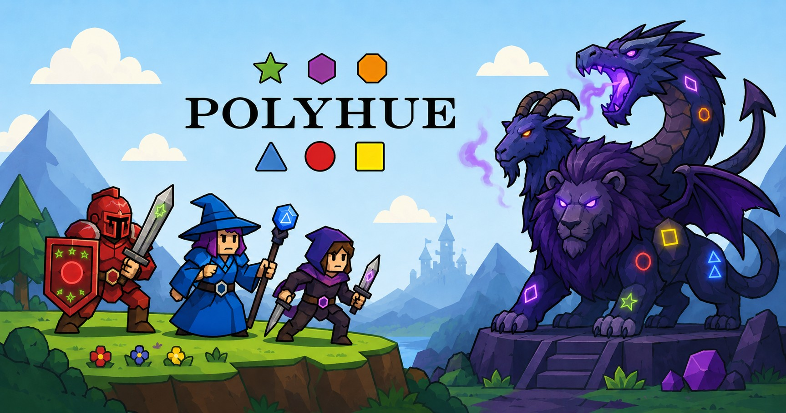
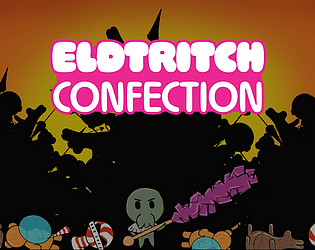
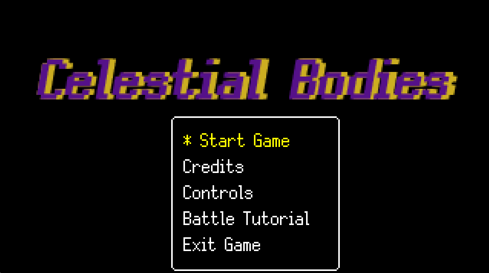
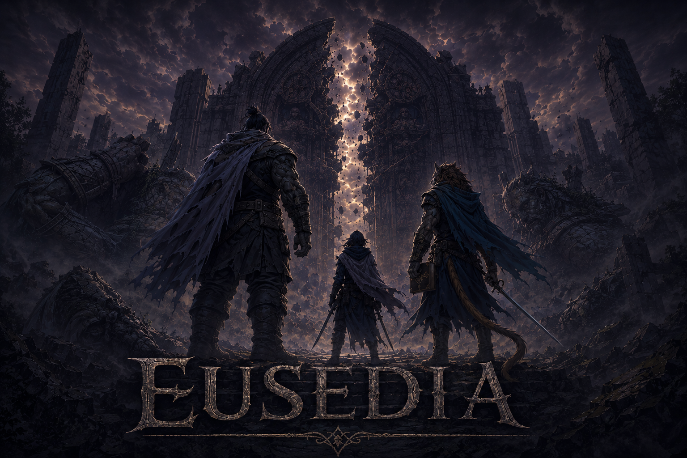
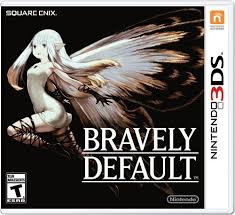
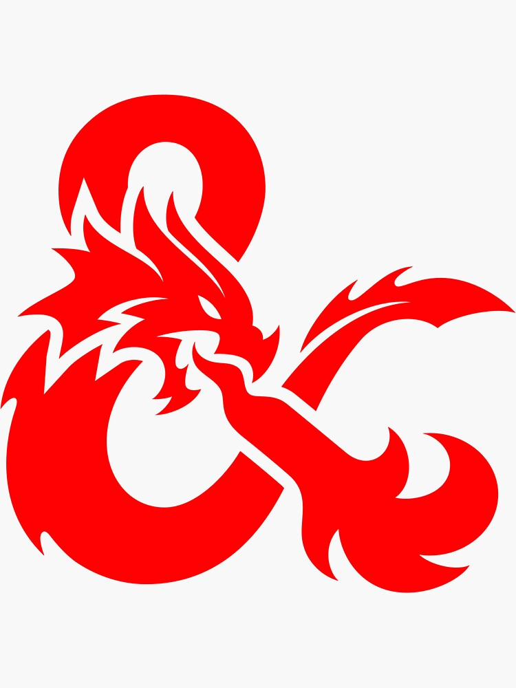
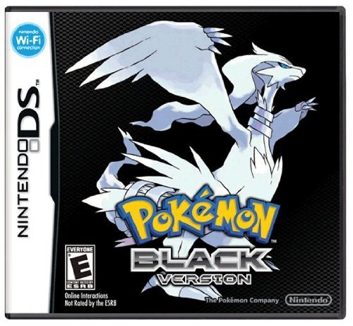
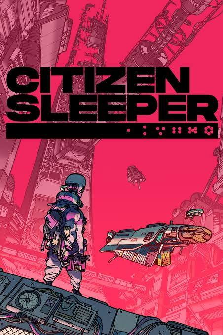
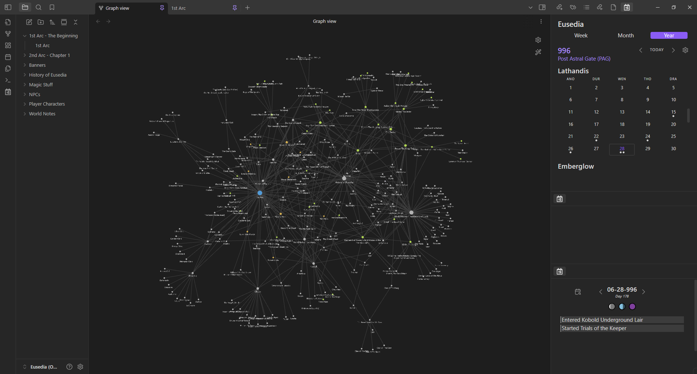

Ray Sarlatte
Game Designer · Level Designer · Narrative Designer · Writer
Hail and well met, fair traveler. I’m Ray — a storyteller, world-builder, and designer of games, levels, and the narratives that bring them to life.
Projects

Glocktopus
Unreal Engine · Multiplayer Puzzle-Stealth · Aug 2025 – May 2026
Shipped on Steam as a 13-person capstone production in Unreal Engine. As Lead Designer & Assistant Producer, I led level design across five environments, built and maintained the team’s design documentation hub, created Blueprint actors, applied & created materials for environment art, and managed production infrastructure including the team’s LLC, business bank account, Steam account, and Steamworks setup.

PolyHue
Print-and-Play · Strategic Boss Rush Card Game · Oct – Dec 2024
Designed a tactical card game where players lead a team of adventurers to defeat rotating Boss Monsters. Emphasized strategic planning, resource management, and adaptability in gameplay.

Eldritch Confection
Unity · 2D Side-Scroller Beat 'em Up · May – Aug 2024
Designed and prototyped game sections focused on cohesive visuals and progressive difficulty. Created and balanced enemy types through playtesting. Integrated narrative elements through environmental storytelling and visual context.

Celestial Bodies
GameMaker · Narrative Card Battler RPG · Jan – Apr 2024
Planned and structured in-game events to align narrative pacing with storytelling goals. Wrote and edited dialogue for consistency in voice, theme, and emotional impact. Created card art maintaining visual cohesion with the established style guide.

Eusedia
D&D 5E · Homebrew TTRPG Campaign · July 2023 – May 2025
Led a 17-session homebrew D&D campaign in an original high-fantasy world. Developed custom mechanics, extensive lore, and session planning. Themes of moral ambiguity and post-divine tragedy.
Writing
A piece set in the past of the D&D campaign world of Eusedia, recounting the final moments of a civilization through the eyes of the person who unknowingly caused its destruction.
Inspired by the Epic of Gilgamesh — an exercise in matching player choice to compelling narrative while building an engaging game system.
Broken into small sections to encapsulate tiny emotional moments within the last five minutes and the first five minutes of a man’s life.
Led a 17-session tabletop RPG campaign focused on moral ambiguity and the complexities of good vs. evil. Custom mechanics for chase sequences and puzzle-solving. Extensive worldbuilding, lore, and session planning.
Skills & Tools
Education
Experience
Providing frontline technical support and client service.
- Manage work orders and ensure timely, accurate delivery of service
- Coordinate with in-store and remote teams to maintain service quality
Diagnose and repair computers, devices, and consumer electronics for customers
- Perform hardware and software troubleshooting to resolve technical issues efficiently
- Maintain accurate service records and repair documentation
- Communicate repair solutions and recommendations to customers in a professional manner
- Collaborate with team members to ensure high-quality service and customer satisfaction
Sole legal founder of the studio’s LLC, though built and run in the spirit of a co-founded studio with a 13-person capstone team; balanced Lead Designer duties with production and business operations for the team’s game, Glocktopus.
- Founded and legally established Dustbath Studios LLC, including the business bank account and Steam/Steamworks store page
- Led level design across five environments, from whitebox blockouts through dressed, playable levels with documented puzzle flows
- Built and maintained the team’s Design Documentation Hub and Microsoft Loop task-assignment system to keep a 13-person team organized
- Balanced Lead Designer responsibilities with Assistant Producer duties across the full production cycle
About Me
Thanks for taking a look around. Here’s a little bit about me! I’m a Game Designer & Narrative Designer currently based in California. I love interactive storytelling and creating gameplay moments that stick with players long after the screen fades to black. I’m honing my skills through solo projects and collaborative work to contribute to innovative, story-rich games.
I have two bachelor’s degrees from the University of Utah — one in English and one in Game Design — which let me focus specifically on game-based narrative and level design. My background in writing and literature gives me a strong foundation for crafting and understanding what makes compelling characters, meaningful dialogue, and immersive environments that support player-driven storytelling.
Storytelling has always been at the heart of who I am. Outside of design work, I run TTRPG campaigns for friends and family using systems like Dungeons & Dragons & Daggerheart and explore the mechanics of other tabletop RPGs in my spare time. I constantly stay engaged with narrative systems and game design from different angles, whether writing short stories, poems, worldbuilding for my own projects, or consuming a variety of books and media to better understand how professionals craft their stories. I’m always thinking about what it means to be a good storyteller and how I can improve those qualities in myself.
At the core of my design philosophy is a belief that the most powerful stories in games aren’t just told, they’re lived. Whether it’s the layout of a dungeon, a forgotten ruin tucked into the world, or the subtle emotional beats in a conversation, I strive to build experiences that reward curiosity and invite emotional investment. I want each player’s journey to feel personal and meaningful, because a story isn’t just what happens in games — player choices drive it.




Get In Touch
Looking to collaborate, hire, or just talk shop about games, stories, and the worlds between? My raven is always in flight.
rsarlatte421@gmail.comEusedia
Eusedia is a high-fantasy TTRPG setting steeped in myth and tragedy — yet much of its vast history has long been forgotten. The tales of major heroes have already been told: sung by bards, carved in stone, and buried beneath centuries of dust. But now, the stirrings of a second Cataclysm begin to shake the world once more.
*The gods are gone. The myths are buried. But fate has not yet finished writing.*
In this post-divine age, where the gods have been banished and ancient truths lie fractured, a motley crew of unknown adventurers touched by fate are brought together to uncover the growing darkness.
Key Themes: - Forgotten History: Players uncover mythic truths buried under generations of silence - Fate-Touched Journeys: Ordinary people thrust into extraordinary roles by forces unseen - Post-Divine Epic: Magic lingers, gods are gone, but their shadows still shape the land - Rising Darkness: Whispers of a second Cataclysm spread
- Led a 17-session tabletop RPG campaign focused on moral ambiguity and good vs. evil complexity
- Developed custom mechanics for chase sequences and puzzle-solving to promote player agency
- Managed extensive worldbuilding, lore, and session planning using Obsidian
- Integrated character and rule content with D&D Beyond for seamless session management
